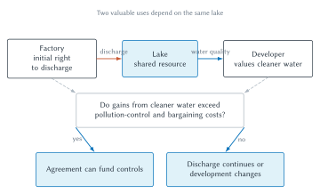

A Factory, a Lake, and a Developer
A factory operates beside a scenic lake. It produces goods that customers value, employs workers, and earns a return for its owners. Its production process also releases waste into the water. In this hypothetical setting, the factory has the legal right to continue the discharge.
A developer owns land around another part of the lake. The land could support houses, restaurants, trails, and other lakeside uses, but those plans become much more valuable if the water is cleaner. Pollution control at the factory would therefore create a benefit for the developer.
This looks like the negative externality introduced in Chapter 2. The factory considers wages, equipment, energy, and materials when deciding how to operate, but it does not automatically bear the loss in development value caused by dirtier water. The initial economic diagnosis seems straightforward: an important cost is missing from the factory’s calculation.
The legal question is less straightforward. Should the factory be prohibited from discharging? Should it pay damages or a tax? Should the developer pay for pollution controls? Should the development change instead? Does it matter who arrived first or who holds the legal entitlement? What happens if thousands of homeowners use the lake rather than one developer?
These questions cannot be answered by observing that pollution causes harm. The factory’s production is valuable too, and every response consumes resources. Sound economic analysis must compare the feasible uses and the institutions available to coordinate them.
Figure 4.1 maps the conflict. It is a stylized teaching example, not a description of the environmental law of a particular jurisdiction. Its purpose is to make the competing uses and bargaining problem visible.

Figure 4.1. A factory, a lake, and a developer. The legal entitlement supplies the starting point for the conflict. Whether agreement can improve the outcome depends on the gains from cleaner water, the cost of pollution control, and the cost of reaching and enforcing a bargain.
The rest of the chapter develops a method for answering the questions raised by the figure. We begin with the familiar externality response, then introduce Ronald Coase’s deeper challenge: What changes when harms are reciprocal, legal rights are transferable, and agreement itself is costly?
The Pigouvian First Answer
Recall the basic externality logic. An actor who bears all relevant costs and benefits has a reason to compare them when choosing what to do. If some costs fall on outsiders, private incentives can diverge from social value.
The factory pays for its labor and fuel, but the developer loses value when water quality falls. If that loss never enters the factory’s calculation, the factory may discharge too much waste or invest too little in pollution control. One possible response is to internalize the external cost by making the factory bear more of the harm associated with its choices.
A corrective tax could charge for discharge. Tort damages could require compensation for legally attributable harm. A fine could punish violation of an emissions rule. A regulation could mandate a control technology or specify a water-quality standard. Each approach changes the factory’s expected payoff from continuing the discharge.
This is often called a Pigouvian response, after economist A. C. Pigou. The core intuition is powerful: when a decision omits an external cost, adjust the decision-maker’s incentives so that the missing cost receives weight.
But saying “make the polluter pay” does not complete the analysis. Someone must determine which effects count, estimate their size, identify the relevant activity, monitor conduct, and enforce the response. The developer may also have ways to reduce the conflict. The factory and developer may possess information that a regulator or court lacks. They may be able to reach an agreement. A legal response can itself create administrative costs, errors, and strategic behavior.
The Pigouvian approach identifies an incentive problem. Coase asks us to examine the institutional problem underneath it.
What Exactly Is the Entitlement?
The phrase “the factory has the right to discharge” compresses many legal details. A real entitlement must answer questions about scope. Which substances may be released? In what quantity? At which location and time? For how long? May the right be transferred? What remedy follows a violation? Which institution interprets uncertain terms?
Those details change the economics. A clear limit can reduce disagreement about the no-agreement baseline. A vague promise of “reasonable use” may permit adaptation but require costly interpretation. A transferable entitlement can move through exchange, while a nontransferable rule blocks some bargains deliberately. An entitlement protected by an injunction gives its holder different leverage from one protected only by damages.
Clarity is therefore not the same as breadth. Law could clearly give the factory an unlimited right to discharge any substance forever, but that rule might ignore changing harms and technologies. Law could clearly prohibit every trace of discharge, but that rule might prevent valuable production even when modest emissions create little harm. A usable entitlement must be sufficiently definite for planning and exchange without pretending that every future condition is known.
Chapter 3 showed that rights depend on institutions. A paper entitlement is valuable only if parties can identify it, rely on it, transfer it when permitted, and obtain a remedy when it is violated. Chapter 5 will examine the content and protection of property rights in detail. For now, the important point is that bargaining does not begin from nature. Law helps construct the object over which the parties bargain.
Reciprocal Harm and Joint Value
The factory physically changes the water. That fact matters for causation, responsibility, and law. Yet an economic comparison must also ask what happens when the factory is stopped.
If discharge is prohibited, the developer receives cleaner water, but the factory must install controls, alter production, relocate, or close. If discharge continues, the factory avoids those costs, but the developer loses valuable opportunities. Choosing either use prevents some part of the other use. Coase described this feature as the reciprocal nature of harm.
A thought experiment makes the point clearer. Imagine that one company owns both the factory and the development. The company would not treat pollution damage as someone else’s problem. Dirtier water would reduce the value of one of its own assets. At the same time, it would not treat factory production as worthless. It would compare the total value created by the alternatives.
Suppose pollution controls cost \$2 million and cleaner water adds \$5 million to the development’s value. An integrated owner installs the controls. Spending \$2 million creates a \$5 million gain elsewhere in the organization, increasing joint value by \$3 million.
Now change the numbers. Suppose controls cost \$6 million while cleaner water adds only \$5 million to development value. An integrated owner does not install the controls merely because the waste physically comes from the factory. It allows discharge and changes, relocates, or abandons the development plan because the controls would consume more value than they create.
The integrated-owner thought experiment does not recommend merging every pair of conflicting activities. It identifies the comparison that an institution should help produce. The efficient use is the feasible arrangement with the greatest total value after counting both sides.
Separate ownership creates an additional question. Can agreement make the factory and developer behave as though one decision-maker were comparing the joint consequences?
Does It Matter Who Came First?
Suppose the factory was operating before the developer acquired the lakeside land. Many people react differently to that sequence than they would if the factory opened beside an established resort. Lawyers sometimes describe the issue as coming to the nuisance: one party knowingly locates near an existing activity and later complains about its effects.
Timing can matter, but not because it mechanically determines the efficient use. At the moment of conflict, the same comparison remains necessary. If controls cost \$2 million and cleaner water creates \$5 million in development value, controls increase joint value regardless of which activity arrived first.
Timing matters through expectations and investment incentives. If the developer knew about the discharge and the factory’s entitlement, the land’s purchase price may already reflect dirtier water. Granting the developer a new right to stop discharge could transfer wealth that was not part of the original purchase. It might also encourage buyers to acquire inexpensive land beside existing activities in hopes of later obtaining compensation.
The other rule creates its own incentives. If being first gives the factory an unlimited right to impose future harms, the factory may have too little reason to adopt inexpensive controls as surrounding land becomes more valuable. Early use can become a shield for inefficient conduct even after technology, population, and opportunity costs change.
The legal rule therefore affects decisions made before the dispute appears. Factories choose locations and equipment. Developers investigate land and decide where to build. Lenders and insurers price risks. Communities decide which uses may coexist. A predictable entitlement can reduce uncertainty, but a rigid entitlement can preserve a use after circumstances have changed.
This is another reason not to turn Coasean analysis into a slogan. “The developer came later” identifies a relevant fact about expectations and distribution. It does not eliminate the need to compare adjustment costs, reliance, notice, bargaining possibilities, and institutional alternatives. Chapter 5 will return to nuisance and land-use rules after developing a fuller account of property rights.
Cooperative Surplus and the Bargaining Range
Return to the original numbers. Cleaner water adds \$5 million to development value, and pollution controls cost \$2 million. The factory currently holds the legal right to discharge. Without an agreement, discharge continues.
The developer could offer to pay for pollution controls. The factory requires at least \$2 million, because a smaller payment would not cover the control cost. The developer is willing to pay as much as \$5 million, because a larger payment would exceed the value created by cleaner water.
Any payment strictly between those amounts can make both parties better off. If the developer pays \$3 million, for example, the factory pays \$2 million for controls and keeps a \$1 million gain. The developer receives \$5 million in added land value, pays \$3 million, and gains \$2 million. Together they gain \$3 million.
Let
Read the expression in words. The gain from agreement equals the benefit created by cleaner water minus the cost of producing it. The symbol does not determine how the \$3 million is divided.
Let
This interval is the bargaining range. At \$2 million, the factory is just compensated for its control cost. At \$5 million, the developer gives up the full gain from cleaner water. Payments inside the range divide the cooperative surplus in different ways.
Nothing in the basic example predicts one unique payment. Bargaining power, patience, information, alternatives, norms, and legal rules can influence the division. We do not need a formal bargaining solution to understand the central result. The essential point is gains from trade: an agreement can create value because the developer values cleaner water more than it costs the factory to provide it.
Reverse the Legal Entitlement
Now suppose the developer holds the legal right to clean water. The factory must install controls unless the developer gives permission to discharge.
The efficient use remains cleaner water. Controls cost the factory \$2 million, while discharge would reduce development value by \$5 million. The factory would pay at most \$2 million for permission to discharge because that is what it saves by avoiding controls. The developer would require at least \$5 million because that is the loss caused by discharge. No payment can satisfy both parties.
No bargain is needed. The legal baseline already produces the value-maximizing use: the factory installs the controls.
| Initial legal entitlement | No-agreement outcome | Bargaining implication | Efficient use with fixed values | Distributional consequence |
|---|---|---|---|---|
| Factory has the right to discharge | Discharge continues | Developer can pay more than \$2 million and less than \$5 million for controls |
Factory installs controls | Bargaining creates and divides a \$3 million cooperative surplus |
| Developer has the right to clean water | Factory must control its discharge | Factory will not pay the \$5 million minimum needed to impose a loss in order to save only \$2 million |
Factory installs controls | Factory bears the \$2 million control cost; no cooperative surplus arises relative to this legal baseline |
Table 4.1. Cooperative surplus and entitlement reversal. With fixed values and costless bargaining, both entitlements produce pollution control. The legal starting point still changes whether bargaining is needed and who bears the cost.
The comparison reveals two separate questions:
- Which resource use creates the most value? With these numbers, pollution control creates
\$3 millionmore value than continued discharge. - Who receives the benefits and bears the costs? That depends on the initial entitlement and the payment, if any.
If land is bought and sold after the legal rule is known, some of the entitlement’s value may become reflected in land prices. If people value additional wealth differently, changing the entitlement may also alter later choices. Those complications matter in advanced versions of the theorem. For the present fixed-value example, the central distinction is enough: efficient use and distribution are not the same question.
A Second Numerical Case: When Discharge Is Efficient
The original numbers make cleaner water the efficient use. That result comes from the values, not from a rule that zero pollution is always efficient.
Suppose cleaner water adds \$5 million to development value but pollution controls now cost \$6 million. Installing controls would destroy \$1 million in joint value. Continued discharge is the efficient use within this simplified choice.
If the factory has the right to discharge, no bargain is needed. Discharge continues under the legal baseline. The developer would pay at most \$5 million for cleaner water, while the factory requires at least \$6 million to cover the controls. There is no mutually beneficial payment.
If the developer instead has the right to clean water, the no-agreement outcome requires the factory to install the costly controls. Now a bargain can create value. The factory is willing to pay up to \$6 million for permission to discharge, and the developer requires at least \$5 million to accept the resulting loss. A payment between those amounts creates and divides a \$1 million cooperative surplus.
Both entitlements therefore produce discharge when bargaining is costless, but the payment and distribution differ. This reversed example completes the symmetry behind the theorem. The efficient use can be more pollution or less pollution depending on the relative values. Economic efficiency asks whether another unit of control creates benefits exceeding its cost; it does not declare that environmental quality is unimportant or decide which harms the law may permissibly impose.
The Coase Theorem
We can now state the result that George Stigler later named the Coase Theorem:
The theorem is a benchmark. In the factory-right case, bargaining moves the lake toward its higher-valued use. In the developer-right case, the legal baseline already produces that use. Reversing the entitlement changes payments and wealth but not the use of the lake in this simplified example.
“Zero transaction costs” is intentionally demanding. The parties can find one another, know the relevant values, communicate without expense or delay, write any needed agreement, observe performance, and enforce promises at no cost. Strategic behavior never prevents them from realizing available gains.
Sometimes people restate the theorem using “low transaction costs.” That phrasing captures the practical intuition: bargaining becomes more plausible when its costs are small relative to the gains. But the precise benchmark is zero transaction costs. Positive costs must be subtracted from the cooperative surplus and can affect the result.
The theorem also does not determine which entitlement is fair, morally justified, constitutionally permissible, or politically legitimate. An efficiency result cannot answer those questions by itself. Nor does the theorem prove that government is unnecessary. Courts, registries, contract enforcement, and public rules may be what make rights clear and agreements credible in the first place.
The lake example therefore has two lessons. The famous theorem explains what frictionless bargaining could accomplish. Coase’s broader contribution directs attention to the institutional obstacles that keep the bargain from happening.
Why the Bargain May Fail
The simple bargain involved one factory, one developer, known values, a clear entitlement, and an enforceable promise. Real disputes rarely arrive in that form.
Search and Information Costs
The parties must first identify one another and learn what matters. Who owns the affected land? Which discharge changes water quality? How much would controls cost? How much value would cleaner water create? Are there other users of the lake whose losses or benefits should be counted?
Some information is technical. Engineers may disagree about how a control system performs. Scientists may face uncertainty about ecological effects. Some information is private. The factory knows more about its production process, while the developer knows more about its plans and financing. Each side may have a reason to exaggerate its costs or benefits to obtain a larger share of the surplus.
Uncertain legal rights create another information cost. A permit, deed, easement, regulation, common-law rule, or contract may define the parties’ authority. If those sources conflict or their application is uncertain, the parties must spend resources determining the bargaining baseline before discussing a payment.
Bargaining and Strategic Costs
Even informed parties must communicate, propose terms, make concessions, and record an agreement. Negotiation consumes time and professional services. Delay may destroy some of the opportunity. A party may refuse an otherwise beneficial offer in hopes of capturing a larger share.
Distribution is therefore not an afterthought. The parties can agree that controls create \$3 million while fighting over who receives it. The possibility of strategic bargaining becomes more serious when one side faces a deadline, has few alternatives, or must obtain unanimous consent.
Now replace the single developer with ten thousand households. If the factory has the right to discharge, residents may try to raise money for controls. Each household enjoys some benefit from cleaner water whether or not it contributes. That creates a free-rider problem.
If each resident instead holds an individual right that the factory must acquire before discharging, one resident may refuse consent in hopes of receiving an unusually large payment. That creates a holdout problem. The problem is not simply that people are unreasonable. A legal arrangement can give each person strategic leverage over a project whose value depends on assembling many permissions.
Monitoring and Enforcement Costs
An agreement must specify what the factory promises. “Keep the lake clean” is not enough. How clean? Measured where, when, and by whom? Does the obligation concern the factory’s equipment, its emissions, or the resulting water quality? What happens after an equipment failure, unusual rainfall, a new production process, or pollution from another source?
Monitoring answers whether performance occurred. Enforcement determines what follows if it did not. The parties may need inspections, data access, dispute procedures, security, insurance, or a court. An agreement that cannot be verified or enforced may have little value.
These costs can be compared with the cooperative surplus. Let
If the cooperative surplus is \$3 million and transaction costs are \$500,000, a net gain of \$2.5 million remains to be divided. If transaction costs exceed \$3 million, the bargain consumes more value than it creates. Even when the arithmetic leaves positive net gains, private information or strategic conflict may still prevent agreement.
From the Theorem to Institutional Design
Once transaction costs enter the analysis, “let the parties bargain” is no longer a complete policy. Law faces two related tasks.
First, it can reduce obstacles to agreement. Clear titles identify who may transfer land. Public records reduce search costs. Standard contract terms reduce drafting costs. Disclosure rules can improve information. Courts and arbitration can make promises more credible. Rules allowing an authorized representative to act for a group can sometimes reduce the number of necessary negotiations.
Second, law can choose a sensible outcome for cases in which agreement is unlikely. Traffic rules do not ask drivers to bargain at every intersection. Pollution affecting millions of people cannot ordinarily be resolved through a separate contract with each victim. A starting rule, remedy, or public standard determines what happens when private coordination fails.
Cooter and Ulen give these tasks memorable names.
The Normative Coase principle is sometimes described as lubricating bargaining. Law can make rights simpler, more certain, easier to find, and easier to transfer. It need not know the final highest-valued use if parties can discover that use and trade toward it themselves.
The Normative Hobbes principle begins from a less optimistic situation. If disagreement, threats, delay, or collective-action problems will block trade, the law should try to make the no-agreement result less destructive. That may mean assigning control to the party likely to place greater value on it, placing a precaution duty on the party able to avoid harm more cheaply, or creating a public decision process.
Neither principle eliminates the information problem. A court or legislature may not know who values an entitlement most or who can prevent harm at least cost. Attempting to make that determination can itself be expensive and error-prone. The institutional comparison therefore includes the cost of private bargaining and the cost of public decision-making.
The two principles are not opposites. A property system can assign an initial entitlement for cases without agreement while also making the entitlement transferable. Contract law can provide default rules while enforcing voluntary modifications. A pollution regime can set a baseline and still permit trading or negotiated compliance. Legal institutions often combine a no-agreement rule with a path for consensual change.
Organizations, Associations, and Norms
Direct bargaining between every affected person is not the only way to coordinate. People can change the structure within which decisions are made.
The integrated-owner thought experiment points toward organization. A firm can place connected activities under common authority. One management system can compare the effects of a decision across factories, suppliers, land, and distribution networks without negotiating a new market contract for every adjustment. This can reduce some external bargaining costs.
Organization does not make coordination free. Managers need information from different divisions. Employees may pursue their own objectives. Internal rules can become rigid, and mistakes may be difficult for outsiders to correct. Bringing a transaction inside a firm replaces some market transaction costs with administrative and agency costs. Chapter 12 will use that comparison to study corporate boundaries and governance.
An association can bundle many participants. A homeowners association can adopt noise or maintenance rules for a neighborhood. A watershed group can represent landowners in recurring water disputes. A trade association can set shared technical standards. Representation reduces the number of separate bargains, but it raises governance questions: Who may speak for the group? How are votes counted? What protects dissenters? Who monitors the representative?
Social norms can also reduce formal enforcement costs. Neighbors who interact repeatedly may limit late-night noise, share maintenance, or compensate one another informally because reputation and future cooperation matter. Norms work better when conduct is observable, membership is stable, and expectations are shared. They work less well when parties are anonymous, harms are difficult to observe, or values sharply conflict.
These arrangements reinforce the institutional lesson. A market bargain, firm, association, norm, court, and agency are different coordination technologies. The question is not whether a response is labeled private or public. It is which arrangement handles the relevant information, bargaining, monitoring, and enforcement problems at lower total cost.
Choosing Among Imperfect Responses
Return to the lake. The available responses differ in who makes the immediate decision and what information must be produced.
| Response | Who makes the immediate decision? | Information required | Characteristic cost or failure risk |
|---|---|---|---|
| Private bargain | Factory and affected right holder | Parties, entitlements, costs, benefits, feasible terms | Search, strategic bargaining, holdouts, free riding, monitoring, enforcement |
| Injunction | Court gives the entitlement holder authority to stop or condition the activity | Legal right, violation, scope of prohibited conduct | Litigation, compliance uncertainty, holdout leverage, later bargaining costs |
| Damages | Court or legal process permits the activity subject to compensation | Causation, legally recognized harm, amount of loss | Valuation error, proof cost, delay, collection problems |
| Tax or fine | Public authority sets a price or sanction | Harm or prohibited conduct, tax base, enforcement probability | Measurement error, evasion, administration, possible over- or underdeterrence |
| Direct rule or standard | Legislature or agency specifies permitted conduct or required precautions | Technology, risks, alternatives, monitoring criteria | Rigidity, outdated rules, compliance cost, enforcement error |
Table 4.2. Institutional responses to the lake conflict. Every response uses information and enforcement. The relevant comparison is among imperfect alternatives, not between an imperfect bargain and a costless legal command.
An injunction can give the developer control over whether discharge continues. If bargaining is manageable, the factory can seek permission for a mutually beneficial use. But an injunction can create powerful holdout leverage when many permissions are required or when stopping the activity imposes enormous costs.
Damages can permit discharge while requiring the factory to compensate legally recognized losses. This avoids the need for advance consent from every affected person, but it requires a court or another institution to determine causation and value. Undercompensation leaves some harm external; excessive damages can deter valuable activity.
A tax or fine changes the price faced by the factory. A tax linked to expected harm can encourage the factory to compare discharge with control. A fine can enforce a public rule. Both require a measurable base and credible enforcement. A stated charge that is rarely collected may create a much smaller expected incentive than its nominal amount suggests.
A direct rule can require a technology, limit discharge, or establish a water-quality standard. It can coordinate many parties without thousands of bargains, but the rulemaker must decide what to require and update the rule as conditions change.
Multiple responses can coexist, but more instruments do not automatically produce better incentives. If a factory pays a tax already designed to reflect the full harm and also pays full uncompensated damages for the same harm, its private cost may exceed social cost. On the other hand, a tax and damages may address different harms or enforcement gaps. The correct question is what each instrument adds after accounting for the others.
The institutional menu will return throughout the book. Chapter 5 develops injunctions and damages as ways of protecting property entitlements. Chapter 7 examines accident liability. Chapter 9 considers court information and litigation costs. Chapter 13 compares regulatory instruments and political incentives in greater depth.
Railroad Sparks and Least-Cost Avoidance
Coase used railroad sparks as another example of reciprocal harm. A train produces sparks that can ignite crops planted beside the track. The railroad is the physical source of the sparks, but identifying the physical source does not determine the least costly response.
Suppose crop fires cause \$3,000 in expected annual damage and a spark arrestor costs the railroad \$1,750 per year. Installing the arrestor prevents more harm than it costs. A legal rule that makes the railroad bear the crop losses gives it a reason to take the precaution.
Now suppose an effective railroad precaution costs \$10,000, while the farmer can avoid most of the loss by leaving a narrow strip beside the track unplanted at a cost of \$500. Preventing all farming or all rail service would waste value. The lower-cost adjustment is at the field boundary.
This motivates the least-cost-avoider question: Which party can prevent or reduce the expected harm at lower cost? Guido Calabresi developed this reasoning as part of the economic analysis of accident law.
The least-cost-avoider idea is not a complete liability rule. Courts may have difficulty observing costs. Both parties may be able to take useful precautions. A rule may affect activity levels as well as care. Fairness, rights, and administrability also matter. Chapter 7 will develop those complications. Here the example reinforces the Coasean habit: compare the costs of alternative adjustments rather than stopping after identifying physical causation.
Spectrum and Platform Entitlements
The framework extends beyond land and pollution.
Radio transmissions can interfere with one another. A useful spectrum system must define who may transmit, at what frequency, power, place, or time. Clear and transferable permissions can enable bargaining and reallocation. Poorly defined or highly fragmented rights can create interference, search costs, holdouts, and enforcement problems. Collective or unlicensed uses can sometimes create value as well, which means that exclusive rights are one institutional option rather than an automatic conclusion.
Digital platforms also define valuable entitlements. An app developer may seek access to an operating system, customer data, payment services, or an app store. The platform may claim authority to exclude, set technical standards, charge fees, or change access rules. A bargain can support investment and specialization, but the platform and developer may have unequal alternatives. Third-party privacy, security, competition, and user interests may not be fully represented in their agreement.
These are not exceptions to the traditional framework. They are new settings for familiar questions. What is the entitlement? Who holds it? Can it be transferred? What is the no-agreement outcome? Which parties and effects are outside the bargain? What information and enforcement are required? Chapter 15 will use those questions to analyze platforms, code, and AI agents.
Big Picture
The Coase Theorem begins with ordinary gains-from-trade reasoning. When one party values a change more than it costs another party to provide it, agreement can create a cooperative surplus. With clear entitlements and zero transaction costs, bargaining moves resources toward higher-valued uses regardless of the initial entitlement.
The initial entitlement still matters. It establishes the no-agreement baseline, determines who must seek permission, affects bargaining leverage, and distributes wealth. Efficiency does not decide whether that distribution is fair.
The theorem becomes most useful when its assumptions fail. Search, private information, strategic behavior, free riders, holdouts, monitoring, and enforcement can prevent valuable agreements. Legal institutions then influence not only who pays but also what activity occurs.
The Normative Coase and Normative Hobbes principles capture the resulting design problem. Law can reduce obstacles to private agreement, and it can reduce the damage from disagreement by selecting a workable starting rule. Bargaining, injunctions, damages, taxes, fines, regulation, organizations, and norms each solve some coordination problems while creating others.
Chapter 5 turns this framework into a theory of property. Property rights clarify control, support investment and exchange, and reduce some conflicts. They also require boundaries, records, exclusion, and enforcement. The Coasean question will remain with us: Which transaction costs does an institution reduce, and which new costs does it create?
Chapter Study Map
- Core ideas: reciprocal harm, legal entitlements, no-agreement baselines, cooperative surplus, bargaining ranges, the Coase Theorem, transaction costs, holdouts, free riders, least-cost avoidance, and the Normative Coase/Hobbes principles.
- Figure and tables: explain the factory-lake-developer conflict, calculate the
\$3 millioncooperative surplus, reverse the entitlement in Table 4.1, and compare institutional responses in Table 4.2. - Reasoning tasks: identify the entitlement and fallback outcome, calculate gains from agreement, find possible payments, distinguish efficiency from distribution, diagnose bargaining failure, and compare realistic institutional alternatives.
- Common mistakes: saying the theorem proves law or government is unnecessary, confusing low transaction costs with zero, treating reciprocal harm as denial of physical injury, assuming the physical cause is necessarily the least-cost avoider, or predicting one unique division of the cooperative surplus.
- Practice tools: use the review questions for vocabulary and theorem conditions, the economic reasoning questions for numerical and institutional variations, and the Coasean Conflict Audit for a complete application.
- Optional enrichment: long-run wealth and income effects, formal bargaining solutions, coming-to-the-nuisance doctrine, and specific spectrum-allocation regimes are not required for the chapter’s core argument.
Review Questions
- Why does the factory-lake-developer conflict initially appear to be a standard negative externality?
- What is the basic Pigouvian response to an external cost?
- What does reciprocal harm mean?
- Why does reciprocal harm not imply that physical causation or legal responsibility is irrelevant?
- What does the integrated-owner thought experiment reveal?
- Define cooperative surplus.
- With a
\$5 milliongain from cleaner water and a\$2 millioncontrol cost, what is the cooperative surplus? - What is the bargaining range when the factory has the right to discharge?
- Why does the basic model not determine one unique payment inside that range?
- State the Coase Theorem at a principles level.
- Why is zero transaction cost a benchmark rather than a realistic description?
- How can the initial entitlement affect distribution even when it does not affect efficient resource use?
- Distinguish search, bargaining, and enforcement costs.
- Distinguish a holdout from a free rider.
- What does the Normative Coase principle recommend?
- What does the Normative Hobbes principle recommend?
- What is the least-cost-avoider question?
- Why should institutional responses be compared by their information and enforcement requirements?
- Why might a law-and-economics analysis use the term legal entitlement rather than property right when describing the starting position in a dispute?
Economic Reasoning Questions
- Pollution controls cost
\$4 millionand cleaner water increases development value by\$9 million. The factory has the right to discharge. Calculate the cooperative surplus and identify the gross bargaining range. - Repeat the previous problem when bargaining and enforcement together cost
\$2 million. What net gains remain? Does the arithmetic guarantee agreement? - Controls cost
\$7 million, while cleaner water creates\$4 millionin development value. Determine the efficient use under each initial entitlement when transaction costs are zero. Explain any payment that could occur. - One factory’s discharge affects ten thousand households. Explain how the entitlement assignment can create either a free-rider problem or a holdout problem.
- A factory and developer agree that the factory will maintain “reasonable water quality.” Identify at least four information, monitoring, or enforcement problems created by that language.
- A court can estimate the developer’s harm accurately but cannot observe the factory’s control cost. Compare an injunction with damages without assuming either remedy is automatically superior.
- A pollution tax is intended to equal the full external harm, but victims may also recover full damages for the same loss. Explain why the combination could overcorrect incentives. Identify a reason the conclusion might change.
- Railroad spark prevention costs
\$8,000; expected crop damage is\$5,000; and a farmer can avoid the loss by changing planting patterns at a cost of\$1,500. Identify the least-cost adjustment and explain what additional facts a legal rule would need. - A platform has the contractual right to exclude an app developer. Identify the no-agreement outcome, possible cooperative surplus, transaction costs, and one important third-party interest that their bargain might omit.
- A city proposes replacing individualized noise disputes with a uniform nighttime rule. Use the Normative Coase and Normative Hobbes principles to explain the potential advantage and cost of the change.
Law and Economics Lab
Coasean Conflict and Bargaining Audit
Choose a real or carefully constructed conflict involving incompatible uses. Suitable topics include neighborhood noise, shared parking, water access, an easement, spectrum interference, use of customer data, platform access, or a recurring campus-resource dispute.
- Describe the conflict neutrally. Identify each valuable use and separate physical causation from the economic comparison.
- Identify the current or assumed legal entitlement and the no-agreement outcome. If using a real dispute, verify the entitlement against an authoritative source and state the jurisdiction and date.
- Estimate or construct plausible values for the benefit of changing the use, the cost of adjustment, and any direct implementation cost. Clearly label hypothetical numbers.
- Calculate the cooperative surplus, if any, relative to the no-agreement baseline. Identify the gross bargaining range without predicting a unique payment.
- Reverse the entitlement. Determine what changes in resource use, payment, leverage, and distribution under zero transaction costs.
- Use an AI system to generate a list of possible transaction costs and strategic problems. Classify each as a search or information cost, bargaining cost, or monitoring and enforcement cost.
- Critique the AI response. Remove generic items that do not fit the facts, identify at least one omitted obstacle, and correct any unsupported legal claim.
- Compare at least three institutional responses, such as private bargaining, an injunction, damages, a tax or fine, a direct rule, association governance, or organizational integration.
- Apply the Normative Coase and Normative Hobbes principles. Explain which obstacles law could reduce and what no-agreement rule would limit the harm if bargaining fails.
- Conclude with a recommendation and a confidence statement. Identify the missing information most likely to change your conclusion.
Submit a three-page audit, one numerical table, links or citations for any real legal claims, and an appendix containing the AI prompts and responses you evaluated. The objective is not to obtain an answer from AI. It is to use AI to generate possibilities and then discipline them with entitlements, baselines, values, transaction costs, and institutional comparison.